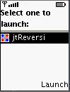
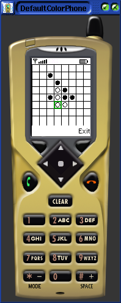
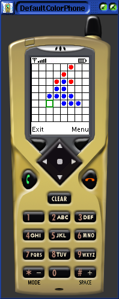
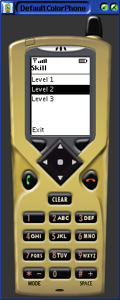
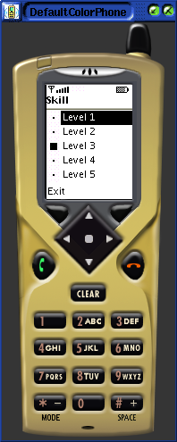
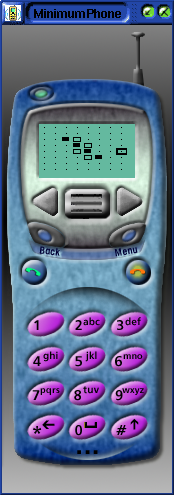

| 0.81.00 |
| DefaultColorPhone (Emulator) |
|  |
| 0.60.00 | 0.62.00 | 0.62.00 |
| DefaultColorPhone (Emulator) | DefaultColorPhone (Emulator) | DefaultColorPhone (Emulator) |
| Board | Board | Change skill window |
|  |  |  |
| 0.73.00 | 0.73.00 | |
| DefaultColorPhone (Emulator) | MinimumPhone (Emulator) | |
| Change skill window | Board | |
|  |  |